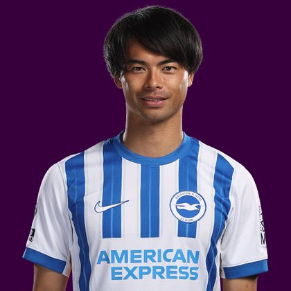

PITCHKEEP
Premier League · The Premier · Sleeper BPL
Player File · MID BHA · Premier #193

Mitoma Kaoru
MID · Brighton · age 29 · £6.0m
2025/26 Premier League
| Year | Starts | Min | G | A | xG | xA | CS | GC | Bonus | YC | Sleeper | FPL |
|---|---|---|---|---|---|---|---|---|---|---|---|---|
| 2025/26 | 19 | 1714 | 3 | 1 | 4.04 | 2.74 | 5 | 20 | 2 | 5 | 56.8 | 62 |
FPL news
Injured — Hamstring injury - Unknown return date
Plus
- 56.8 Sleeper BPL 2025 points (Pitch #229).
- Consensus 131.67 vs Sleeper #229 — the industry still believes more than 2025/26 counted.
Minus
- Injured; Hamstring injury - Unknown return date.
- Board spread 65–229 (FPL xGI to Sleeper BPL 2025).
PitchKeep Take · The Premier
Mitoma Kaoru is a midfielder for Brighton, age 29, £6.0m. The Premier ranks him 193rd overall by splitting Sleeper BPL 2025 (#229, 56.8 points) with the consensus of 6 other boards (131.67). The industry still has him 97 spots ahead of the 2025/26 Sleeper count. The Premier pays that reputation something, not everything. Brand does not outrun a down year, and a down year does not erase a player Brighton still builds around.
The 2025/26 Premier League line is 19 starts and 1714 minutes, 3 goals and 1 assists, 18 tackles and 27 CBI. Official FPL scored it at 62 points (2.5 per match) with 2 bonus. Sleeper's table turned the same counting stats into 56.8. Midfielders get 9 a goal, 6 an assist, and 1 a clean sheet, plus a full tackle/CBI stream. That is why a six who plays every week can outrank a ten-goal winger who sits.
Underlying: 4.04 xG, 2.74 xA, 6.78 xGI and -1.7 above expected assists. Role at Brighton is the 2026/27 question sitting under the 2025/26 number. 19 starts is a starter. Anything under 25 starts is a rotation warning we already priced. Minutes are the skill that survives a finishing regression. The friendliest board is FPL xGI at 65; the coldest is Sleeper BPL 2025 at 229.
Market: £6.0m, 0.1% owned into the 2026/27 FPL start, 7 boards on the file. That ownership is a leftover. Either the public missed a real season or the public correctly decided the role is not repeatable. The Premier's rank is our vote. If we have him inside the first 80 and they have him at 0.4%, that is a Sleeper buy. ICT 112.3.
Instruction: he is on the 400, which is already a statement, and he is not a star. Stash in Sleeper if the minutes are real. Do not let a Pitch screenshot make you start him over a Premier top-80. FPL flag: injured; Hamstring injury - Unknown return date. Nearby on The Premier: Milos Kerkez, Lukas Nmecha, William Osula. Versus The Pitch (Sleeper-only #229), the hybrid moves him up to #193. That move is the third list doing its job.
He is 29, which on this desk is neither a dart nor a warning label. Prime-age midfielders get ranked on what they just did and whether Brighton still gives them the ball. 1714 minutes says yes. The 2026/27 FPL price (£6.0m) is the app's guess at whether that continues. The Premier is the blend of that guess and the box score.
How to use the file: The Pitch is the Sleeper-only 400 (he is #229 there). The Premier is the 50/50 with every other board we track. Attack, Midfield, Defence, and Keepers re-rank the same Sleeper table by position. BK Value on this page follows The Premier when you are on the hybrid calculator and The Pitch when you are on the Sleeper calculator. Same curve either way — 12,000 at 1.01. Unranked sources are skipped, never treated as 999, which is why a player missing from Yahoo's XI is not secretly ranked 400th.
Tape · 2025/26 Premier League
Kaoru Mitoma | Top 5 Premier League Goals
Every Board
Spread 65–229 · 7 sources
| Source | Rank |
|---|---|
| FPL xGI | 65 |
| FPL Price Board | 70 |
| FPL ICT Index | 103 |
| FPL Form | 122 |
| FPL 2025/26 Points | 215 |
| FPL Draft | 215 |
| Sleeper BPL 2025 | 229 |
On The Premier nearby — Milos Kerkez (#191) · Lukas Nmecha (#192) · William Osula (#194) · Gabriel Martinelli Silva (#195)